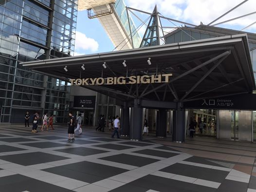
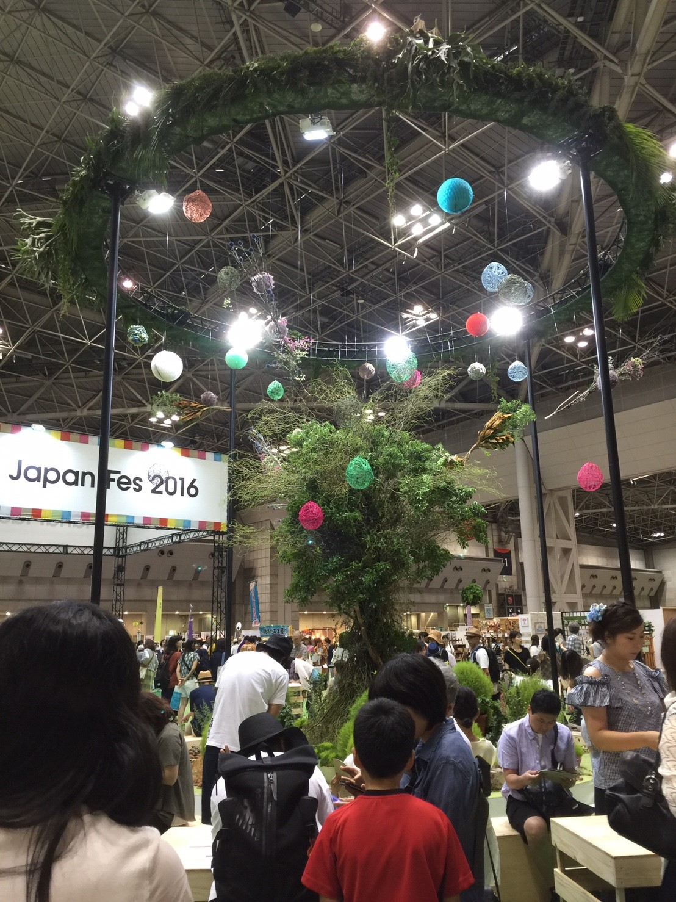
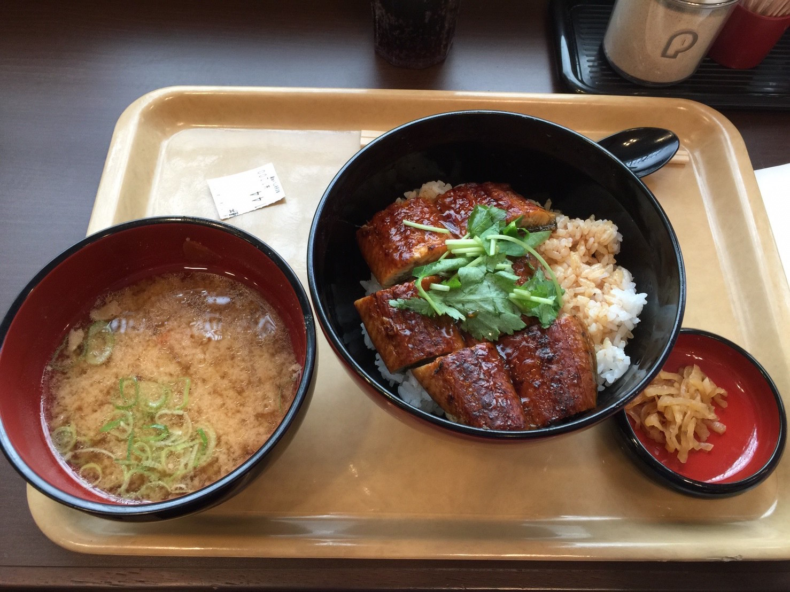
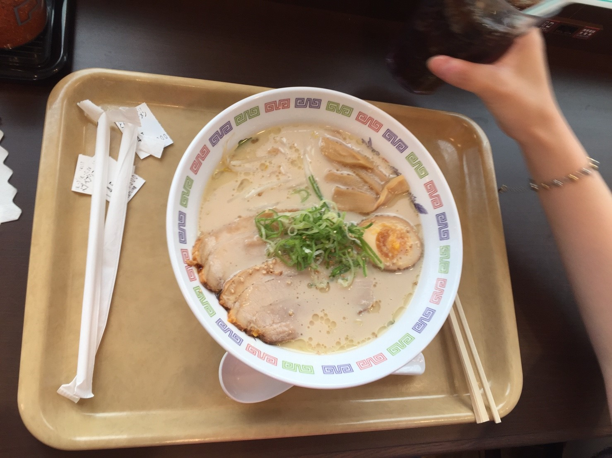

HMIJ手作市集
渋谷LOFT
東京大人味發見
Day2-2015.07.24
< 江 東 區、涉 谷 區>
這個行程看手作物品然後在吃午飯。
展覽：Hand Made In Japan Fes 2016(HMIJ手作市集)
時間：7/23(六)、7/24(日)11:00-19:00
地點：Tokyo big sight (東京ビッグサイト 東1、2、3Hall)
地址：135-0063 東京都江東區有明,3-11-1
門票：一日券1,500日元、兩日券2,500日元。小學生以下免費入場
網址：
https://hmj-fes.jp/
  
back